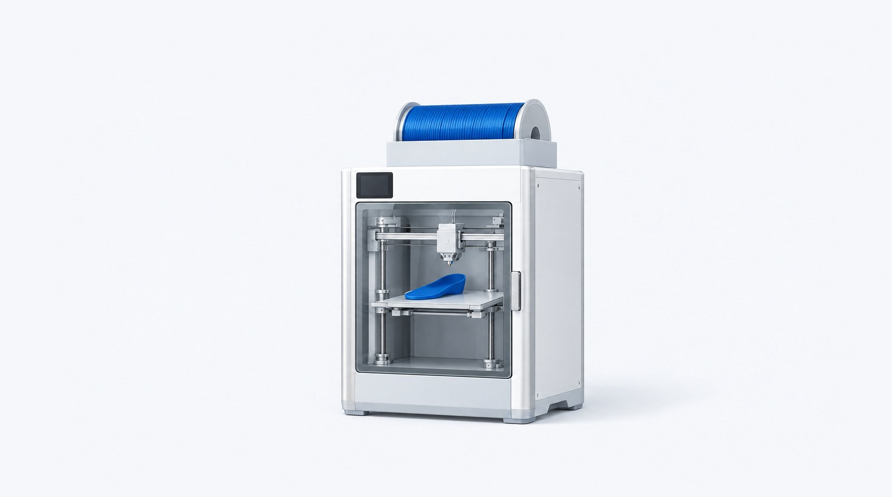
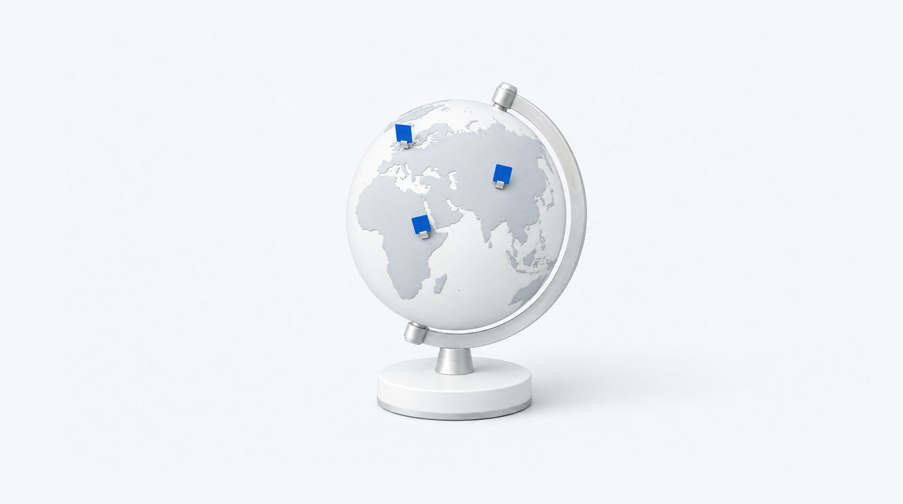
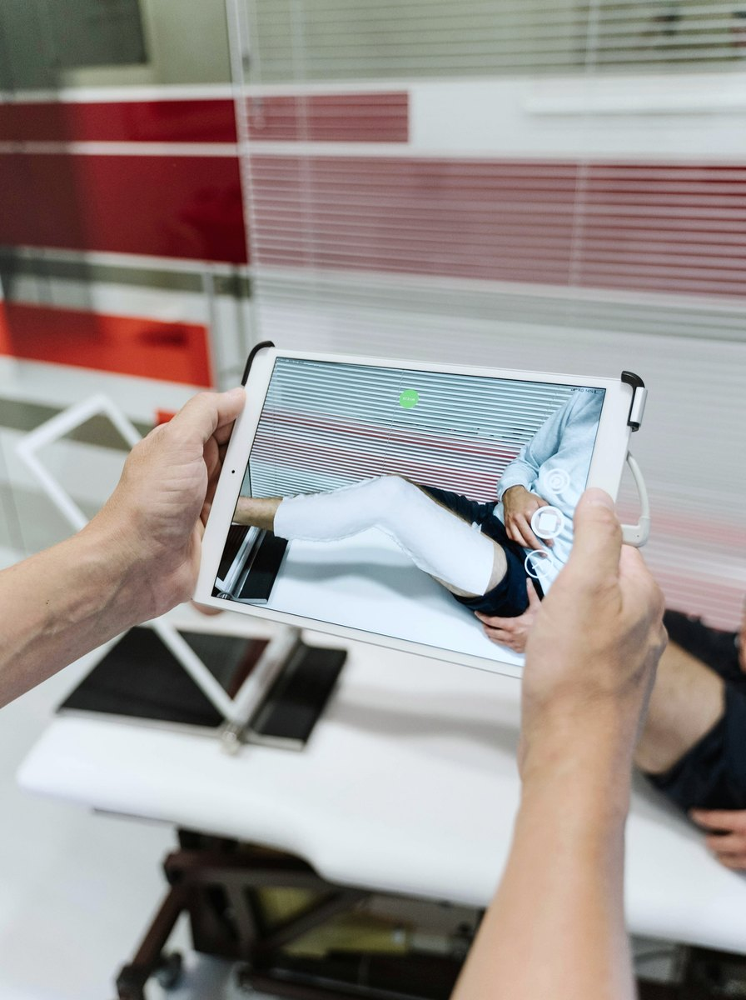
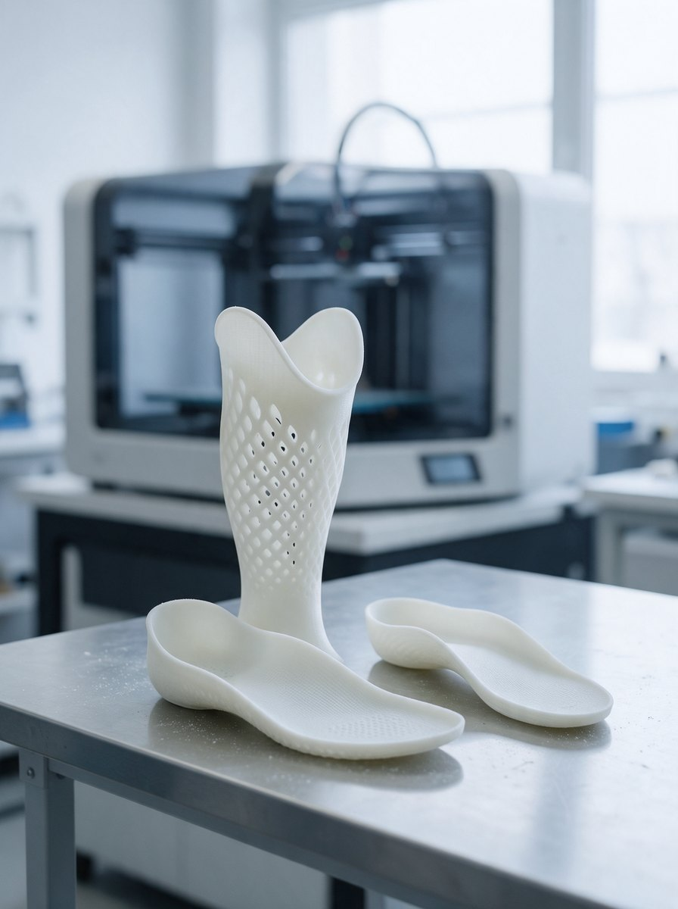
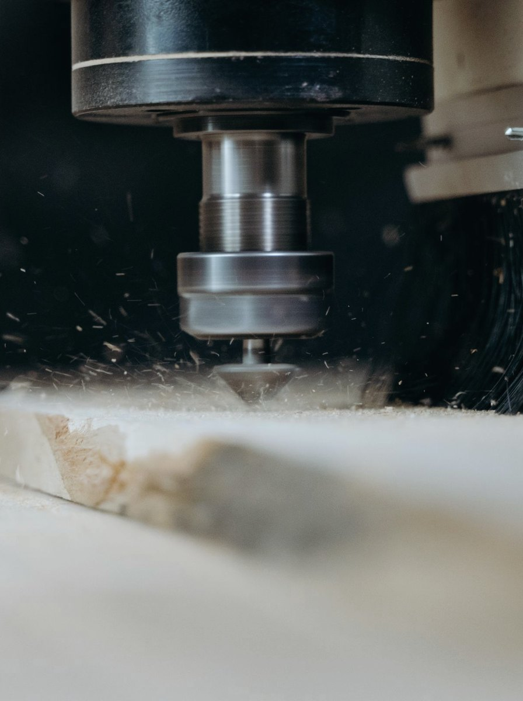
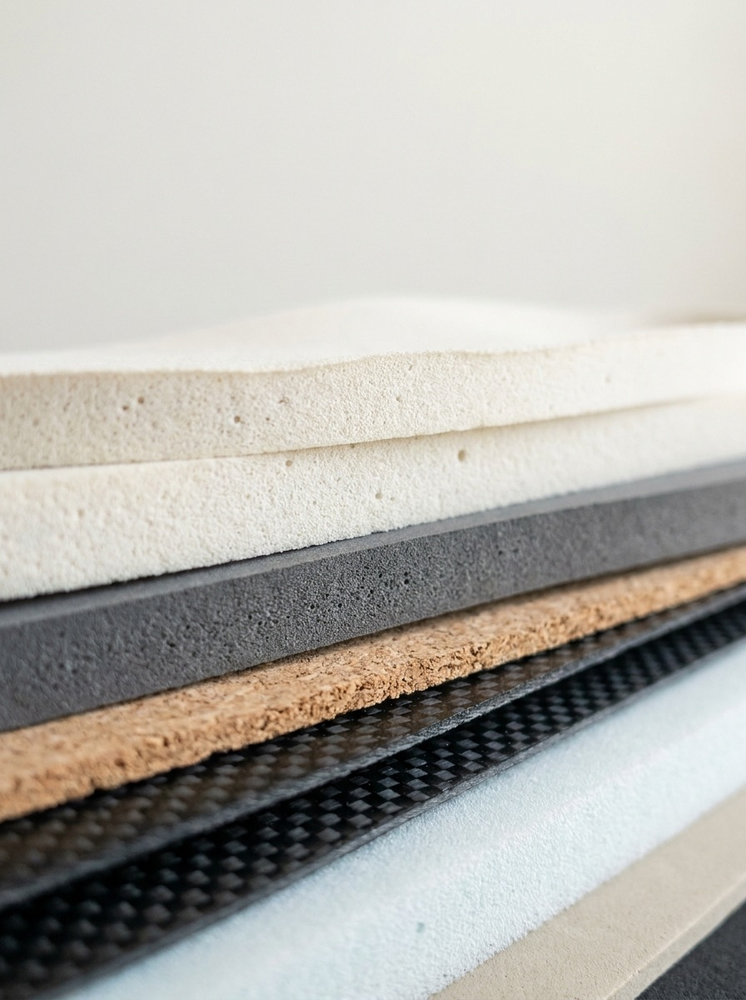
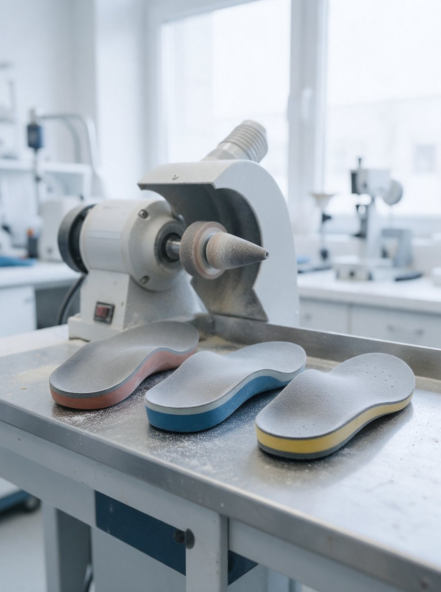
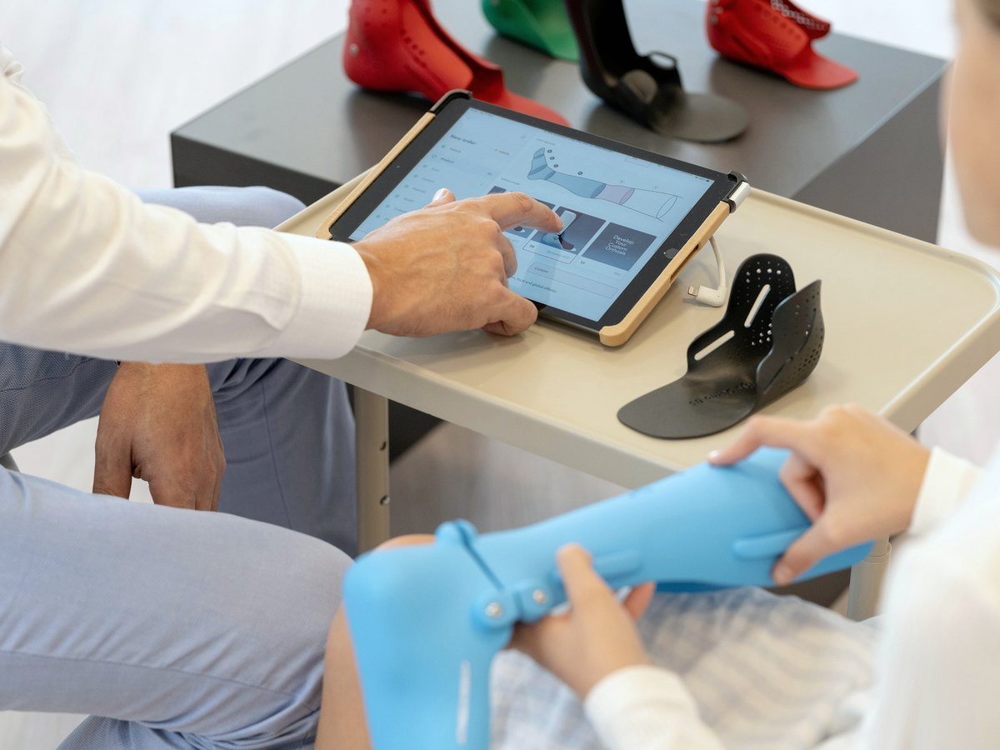

01
Twenty years inside O&P
The relationships come from two decades supplying labs and clinics across the UK, Europe, North America, the Middle East, Australia and Asia, and knowing who is reliable to deal with.
Introductions across the O&P industry, person to person, wherever one company has what another needs. The Global Portal is where the whole network sees what is being offered and sought.
Free, and it takes two minutes. One account opens every hub.
Each hub is a door into a different part of the network. Together they are the Global Portal: one free account opens all four, and every introduction is still made by the NexPoint desk.

LiveCertified labs with production 3D printers offer spare capacity to the clinics and labs around them, so printed devices arrive without buying a 3D printer.
Enter the 3D Print Hub Live
Live
Your production line inside someone else's factory: milled and moulded insoles made as your own line, to your standard, at a price per pair.
Enter the Mill Hub
LiveProducts, materials, technology, partners, and companies looking to buy or sell, as verified, anonymised opportunities. Nothing is sold on the page; you request an introduction.
Browse the boardWebinars and articles for the whole community, from the people on the hubs: what the new 3D printers and materials actually do, and what is coming next.
Join the waiting listThe Global Portal shows you what exists. People decide what meets.
You have the work, a scan ready to make, but not the machine. Or a product that has done well at home and needs a new market.
Somewhere in the network a certified lab has exactly that capacity, or a partner is looking for exactly that product. You have never met.
You ask once. The NexPoint desk reads it personally and weighs the fit. No algorithm decides who meets.
When it fits, we introduce you directly and step back. Orders, files and payments move between the two companies. The relationship is yours.
Every company on the portal is offering something, seeking something, or both. Seekers never pay. Providers pay to list, and we talk the commercial side through with them personally before anything is listed.
Every company on the portal sits somewhere on this line: the clinic that scans the patient, the lab that prints or mills the device, the supplier of the material, the hands that finish it. NexPoint knows who is where, and makes the introductions between them.





We are not a distributor, a marketplace or a lead generation agency. We know both companies in every introduction we make, and we vouch for the fit.
The relationships come from two decades supplying labs and clinics across the UK, Europe, North America, the Middle East, Australia and Asia, and knowing who is reliable to deal with.
The NexPoint desk weighs each request before anyone is introduced. Names, prices and references are shared only inside an introduction, never on a page.
Orders, files and payments move directly between the two companies. We never sit inside the deal, and the customer is yours.
Seekers pay nothing. We earn on the business an introduction produces, so we only make introductions we believe will work.
Most of what we do runs through the Global Portal. When a company wants NexPoint as its own sales and marketing effort in a territory, or a search for partners, acquisitions or joint ventures, that is consultancy: a fixed-term engagement, then a share of the business that follows.
We find and open the right customers and decision makers in your target territory: the manufacturers, clinics, labs and O&P providers we already know.
Acting as an extension of your sales team, so your time goes into real conversations rather than cold outreach.

We identify and qualify O&P resellers and distribution partners with real market presence, make the introduction warm, and support the early commercial discussions, so your indirect channel is built on trusted regional partners.
The UK, Europe, North America, the Middle East, Australia and Asia. An introduction that crosses a border starts with someone who knows both ends of it.
Not sure which hub you need, or want NexPoint working for you one to one? Send a few details and we will set up a 30 minute call.